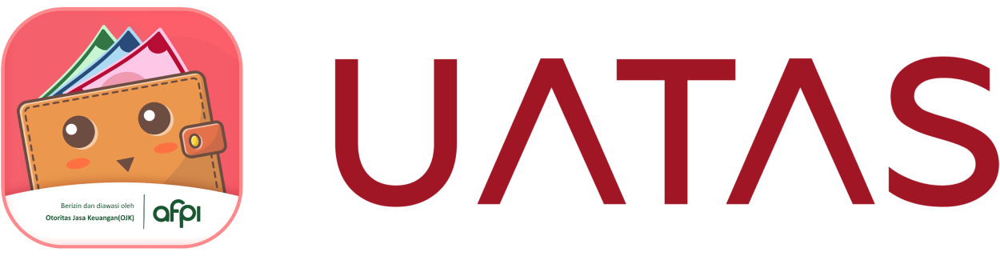

TKB0 : --%
TKB30 : --%
TKB60 : --%
TKB90 : --%
TKB30 : --%
TKB60 : --%
TKB90 : --%

PT Plus Ultra Abadi (UATAS / Kami) dalam melakukan penyelesaian terhadap adanya pengaduan yang diajukan oleh setiap Pemberi Dana, Penerima Dana dan Pihak Ketiga lainnya (selanjutnya secara bersama-sama disebut sebagai “Pengguna/Anda”), senantiasa memperhatikan ketentuan Peraturan Otoritas Jasa Keuangan No. 18/POJK.07/2018 tentang Layanan Pengaduan Konsumen di Sektor Jasa Keuangan serta Surat Edaran Otoritas Jasa Keuangan No. 17/POJK.07/2018 tentang Pedoman Pelaksanaan Layanan Pengaduan Konsumen di Sektor Jasa Keuangan.
Dalam menyelesaikan setiap pengaduan yang disampaikan oleh Pengguna, UATAS selalu berusaha untuk menerapkan prinsip transparansi, keberimbangan, serta kehati-hatian guna memberikan solusi terbaik dari setiap pengaduan yang telah disampaikan.
Berikut tahapan yang perlu ditempuh Pengguna saat mengajukan pengaduan kepada UATAS:
Bentuk pengaduan Anda dapat menghubungi UATAS melalui :
Kami menyadari bahwa Anda memiliki kekhawatiran terhadap pengaduan yang telah Anda sampaikan kepada Kami, namun demikian harus dipahami bahwa setiap pengaduan memiliki bobot serta kompleksitas yang berbeda, sehingga demi memberikan pelayanan yang terbaik kepada Anda berikut adalah Service Level Agreement (SLA) yang akan Kami berusaha penuhi dalam menyelesaikan pengaduan Anda:
Selain terhadap jenis pengaduan beserta SLA yang telah Kami sampaikan di atas, harus dipahami bahwa setiap Pengaduan mungkin saja berkaitan dengan pihak-pihak ketiga lainnya maka standar pelayanan terhadap pengaduan jenis ini akan mengikuti ketentuan berikut:
Pengaduan yang disampaikan oleh Anda akan ditangani dengan alur sebagai berikut:
Terhadap tanggapan dari Pengaduan yang telah Anda sampaikan, maka Kami dapat melakukan tindakan-tindakan sebagai bentuk penyelesaiannya antara lain:
Anda memahami bahwa Kami memiliki hak untuk melakukan penolakan terhadap pengaduan yang telah disampaikan, adapun ketentuan mengenai penolakan terhadap pengaduan Anda adalah sebagai berikut:
Kami akan secara berkala melakukan pelaporan pengaduan Pengguna disertai dengan status pengaduan serta penyebab dan hasil penanganan dari pengaduan Pengguna kepada Otoritas Jasa Keuangan (OJK) untuk periode bulanan dan triwulan dengan bentuk yang telah ditentukan oleh OJK.